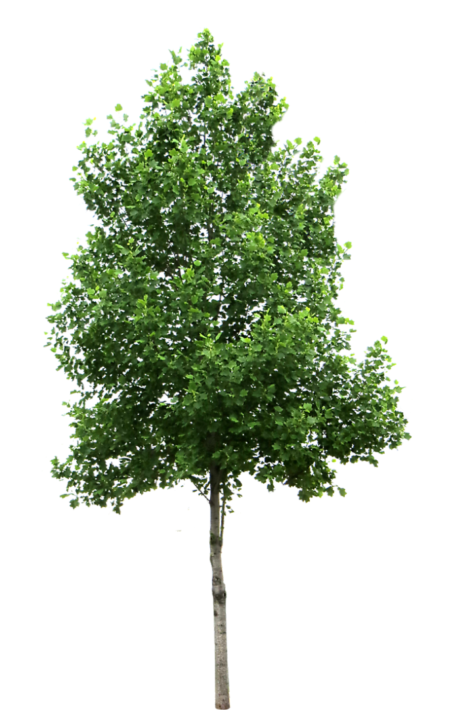
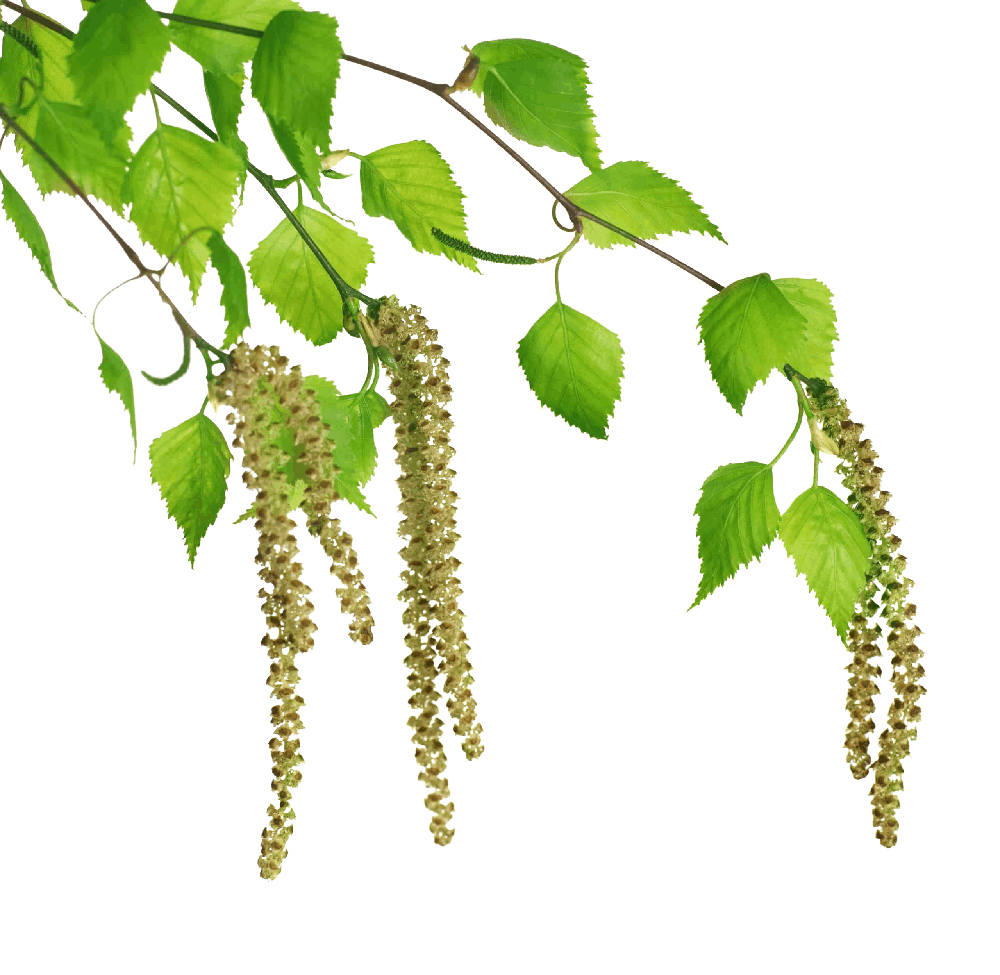
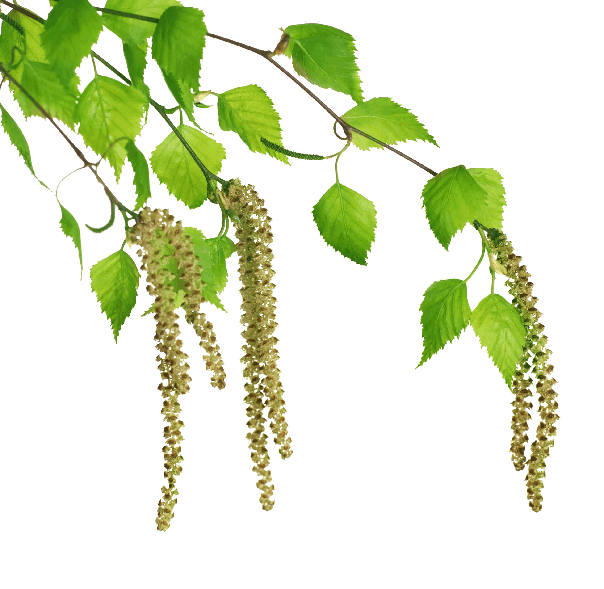
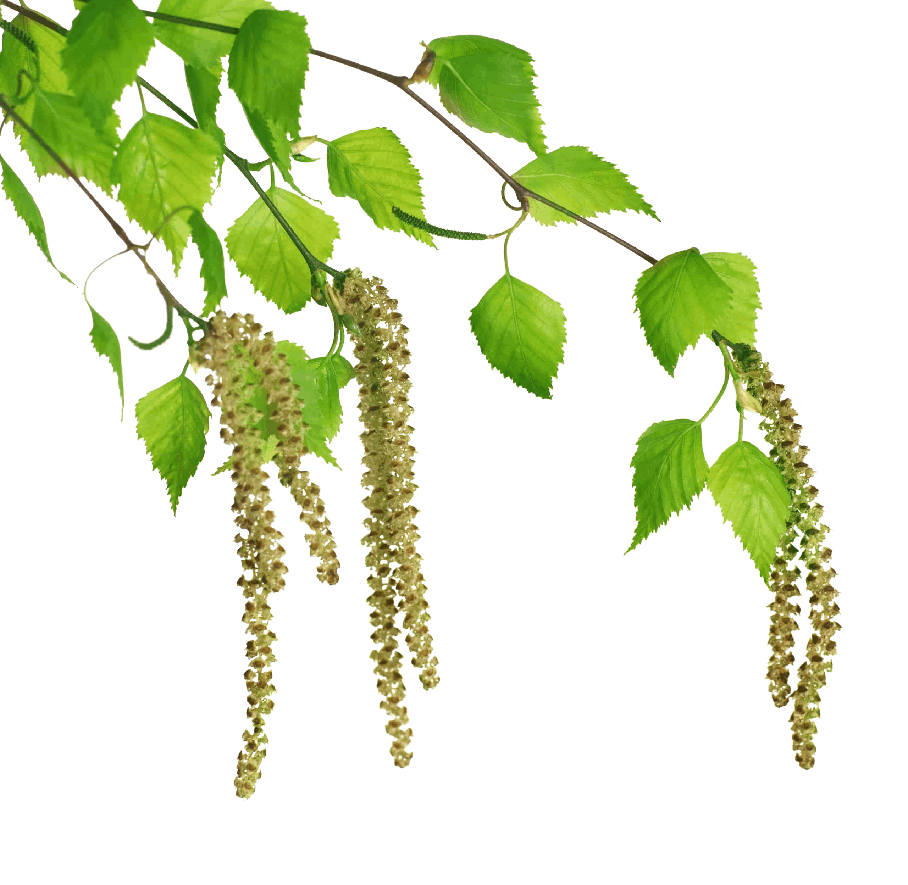

1500 грн
Міцний дуб — символ довговічності...
1200 грн
Сосна — вічнозелена краса...

 


1000 грн
Береза — ніжність природи...
800 грн
Каштан — величне листяне дерево...
1500 грн
Кедр — могутнє вічнозелене дерево...
700 грн
Клен — декоративне листяне дерево...
600 грн
Липа — ароматне листяне дерево...
2000 грн
Сакура — витончене декоративне дерево...
500 грн
Верба — граціозне дерево...